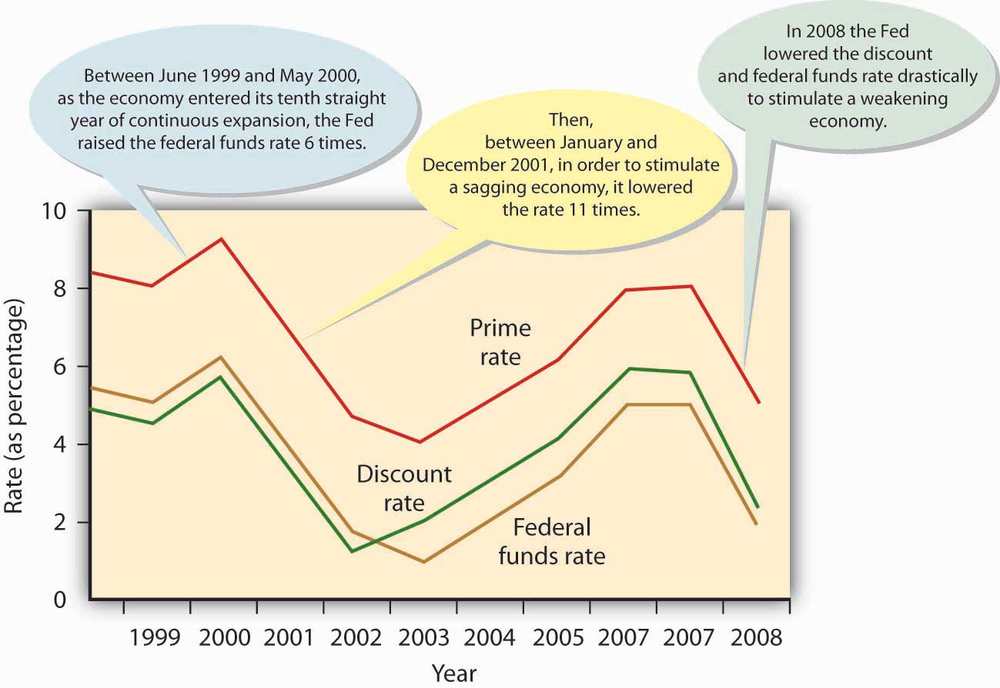

Who decides how much banks should keep in reserve? The decision is made by the Federal Reserve SystemU.S. central banking system, which has three goals: price stability, sustainable economic growth, and full employment. (popularly known as “the Fed”), a central banking system established in 1913. Most large banks belong to the Federal Reserve System, which divides the country into twelve districts, each with a member-owned Federal Reserve Bank. The twelve banks are coordinated by a board of governors.
The Fed has three major goals:
Recall our definition of monetary policy in Chapter 1 "The Foundations of Business" as the efforts of the Federal Reserve System to regulate the nation’s money supply. We also defined price stability as conditions under which the prices for products remain fairly constant. Now, we can put the two concepts together: the Fed seeks to stabilize prices by regulating the money supply and interest rates. In turn, stable prices promote economic growth and full employment—at least in theory. To conduct monetary policy, the Fed relies on three tools: reserve requirements, the discount rate, and open market operations.
Under what circumstances would the Fed want to change the reserve requirement for banks? The purpose of controlling the money supply is primarily to lessen the threat of inflation (a rise in the overall price level) or recession (an economic slowdown gauged by a decline in gross domestic product). Here’s how it works (again, in theory). If the Fed raises the reserve requirement (for example, from 10 percent to 11 percent), banks must set aside more money. Consequently, they have less to lend and so raise their interest rates. Under these conditions, it’s harder and more expensive for people to borrow money, and if they can’t borrow as much, they can’t spend as much, and if people don’t spend as much, prices don’t go up. Thus, the Fed has lessened the likelihood of inflation.
Conversely, when the Fed lowers the reserve requirement (for example, from 10 percent to 9 percent), banks need to set aside less money. Because they have more money to lend, they keep interest rates down. Borrowers find it easier and cheaper to get money for buying things, and the more consumers buy, the higher prices go. In this case, the Fed has reduced the likelihood of a recession.
A 1 percent change in the reserve requirement, whether up to 11 percent or down to 9 percent, may not seem like much, but remember our earlier discussion of the money multiplier: because of the money-multiplier effect, a small change in the reserve requirement has a dramatic effect on the money supply. (For the same reason, the Fed changes reserve requirements only rarely.)
To understand how the Fed uses the discount rate to control the money supply, let’s return to our earlier discussion of reserves. Recall that banks must keep a certain fraction of their deposits as reserves. The bank can hold these reserve funds or deposit them into a Federal Reserve Bank account. Recall, too, that the bank can lend out any funds that it doesn’t have to put on reserve. What happens if a bank’s reserves fall below the required level? The Fed steps in, permitting the bank to “borrow” reserve funds from the Federal Reserve Bank and add them to its reserve account at the Bank. There’s a catch: the bank must pay interest on the borrowed money. The rate of interest that the Fed charges member banks is called the discount rateRate of interest the Fed charges member banks when they borrow reserve funds.. By manipulating this rate, the Fed can make it appealing or unappealing to borrow funds. If the rate is high enough, banks will be reluctant to borrow. Because they don’t want to drain their reserves, they cut back on lending. The money supply, therefore, decreases. By contrast, when the discount rate is low, banks are more willing to borrow because they’re less concerned about draining their reserves. Holding fewer excess reserves, they lend out a higher percentage of their funds, thereby increasing the money supply.
Even more important is the carryover effect of a change in the discount rate to the overall level of interest rates.Robert Heilbroner and Lester Thurow, Economics Explained (New York: Simon & Schuster, 1998), 134. When the Fed adjusts the discount rate, it’s telling the financial community where it thinks the economy is headed—up or down. Wall Street, for example, generally reacts unfavorably to an increase in the discount rate. Why? Because the increase means that interest rates will probably rise, making future borrowing more expensive.
The Fed’s main tool for controlling the money supply and influencing interest rates is called open market operationsThe sale and purchase of U.S. government bonds by the Fed in the open market.: the sale and purchase of U.S. government bonds by the Fed in the open market. To understand how this process works, we first need to know a few facts:
If the Fed wants to decrease the money supply, it can sell bonds, thereby reducing the reserves of the member banks that buy them. Because these banks would then have less money to lend, the money supply would decrease. If the Fed wants to increase the money supply, it will buy bonds, increasing the reserves of the banks that sell them. The money supply would increase because these banks would then have more money to lend.
In conducting open market operations, the Fed is trying to do the same thing that it does in using its other tools—namely, to influence the money supply and, thereby, interest rates. But it also has something else in mind. To understand what that is, you need to know a few more things about banking. When a bank’s reserve falls below its required level, it may, as we’ve seen, borrow from the Fed (at the discount rate). But it can also borrow from other member banks that have excess reserves. The rate that banks pay when they borrow through this channel is called the federal funds rateThe interest rate that a Federal Reserve member bank pays when it borrows from other member banks to meet reserve requirements..Federal Reserve System, “Monetary Policy FAQs,” FED101, http://www.federalreserveeducation.org/fed101_html/policy/basics_print.htm (accessed May 30, 2006).
How does the federal funds rate affect the money supply? As we’ve seen, when the Fed sells bonds in the open market, the reserve balances of many member banks go down. To get their reserves back to the required level, they must borrow, whether from the Fed or from other member banks. When Bank 1 borrows from Bank 2, Bank 2’s supply of funds goes down; thus, it increases the interest rate that it charges. In short, the increased demand for funds drives up the federal funds rate.
All this interbank borrowing affects you, the average citizen and consumer. When the federal funds rate goes up, banks must pay more for their money, and they’ll pass the cost along to their customers: banks all over the country will raise the interest rates charged on mortgages, car loans, and personal loans. Figure 13.6 "Key Interest Rates, 1995–2008" charts ten-year fluctuations in the discount rate, federal funds rate, and prime rateRate that banks charge their best customers.—the rate that banks charge their best customers. Because all three rates tend to move in the same direction, borrowers—individuals, as well as organizations—generally pay more to borrow money when banks have to pay more and less when banks have to pay less. Notice that the prime rate (which banks charge their customers) is higher than both the federal funds and discount rates (which banks must pay when they need to borrow). That’s why banks make profits when they make loans. Note, too, that the Fed lowered the discount rate and federal funds rate drastically in 2008 in an attempt to stimulate a weakening economy.
Figure 13.6 Key Interest Rates, 1995–2008
The Fed performs another important function: it serves its member banks in much the same way as your bank serves you. When you get a check, you deposit it in your checking account, thereby increasing your balance. When you pay someone by check, the dollar amount of the check is charged to your account, and your balance goes down. The Fed works in much the same way, except that its customers are member banks.
Just as your bank clears your check, the Fed clears the checks that pass through its member banks. The monumental task of clearing more than fifteen billion checks a year is complicated by the fact that there are twelve district banks. If someone in one district (for example, Boston) writes a check to a payee in another district (say, San Francisco), the check must be processed through both districts.Federal Reserve System, “Financial Services,” FED101, http://www.federalreserveeducation.org/FED101_HTML/services/index.cfm (accessed May 30, 2006).
In performing the following functions, the Fed is also the U.S. government’s banker:
The Fed also prints, stores, and distributes currency and destroys it when it’s damaged or worn out. Finally, the Fed, in conjunction with other governmental agencies, supervises and regulates financial institutions to ensure that they operate soundly and treat customers fairly and equitably.Federal Reserve System, “Banking Supervision,” FED101, http://www.federalreserveeducation.org/FED101%5FHTML/supervision (accessed May 30, 2006).
To achieve these goals, the Fed has three tools:
(AACSB) Analysis
Have you ever wondered what path your check (or an electronic facsimile) takes once you’ve used it to pay someone? To follow the life of a check, go to http://www.federalreserveeducation.org/fed101/services/checklife/check_sim.htm to link to the Federal Reserve Education Web site. Diagram the steps in the check-clearing process that’s described there, identifying each step by a number from one to seven.
Unfortunately, the process isn’t always this simple. For one thing, the example on the Federal Reserve Web site assumes that your bank (Citizens Bank) and the store’s bank (First National Bank) use the same Federal Reserve Bank to clear checks. This assumption is valid only if both banks are in the same geographic area, but this might not always be true, as you’ll remember that the country is divided into twelve Federal Reserve districts.
Say that, instead of paying by check at a local retail store, you’re writing a check to pay your tuition, and you go to college in San Francisco but live in Boston. Your bank (the Bank of Boston) clears its checks through the Federal Reserve Bank of Boston. Your college’s bank (Frisco Federated) clears its checks through the Federal Reserve Bank of San Francisco. Now go back and revise your diagram to reflect the changes entailed by this revised scenario. (Hint: The Federal Reserve Bank of San Francisco has to send the check to the Federal Reserve Bank of Boston for collection.)